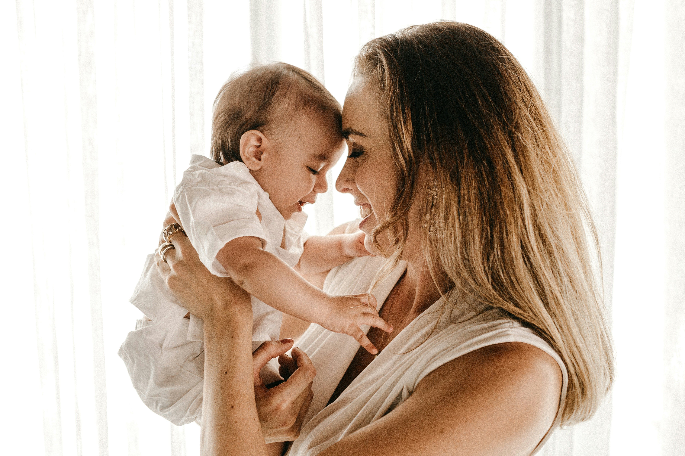

Practice

Baby-Care-Essentials（LP）
HTML / CSS / AOS / Bootstrap Icons
育児中のママ向け架空LP
ストーリー構造を意識して設計

PHOTO-BOOK-Practice
HTML / CSS
制作時間：5時間
CodeJumpのデザインをもとに、HTML/CSSで模写コーディングを行いました。
レスポンシブ対応、余白調整を練習しました。